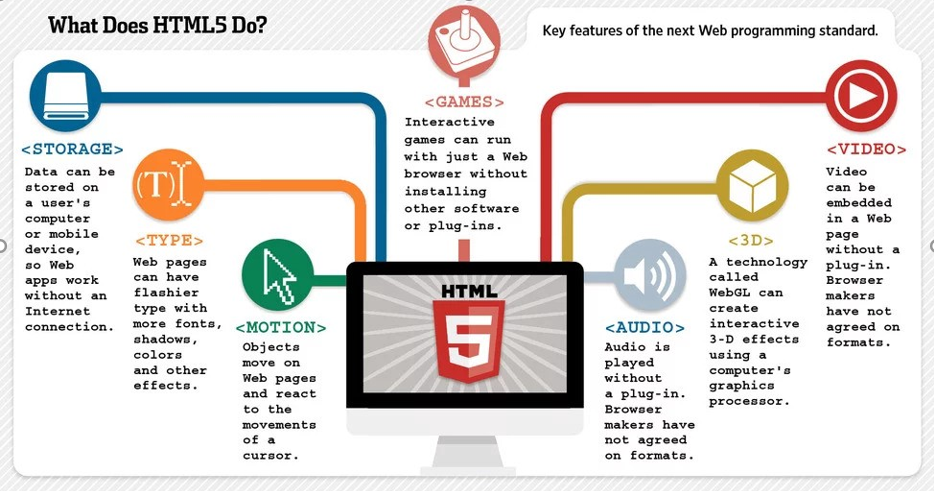
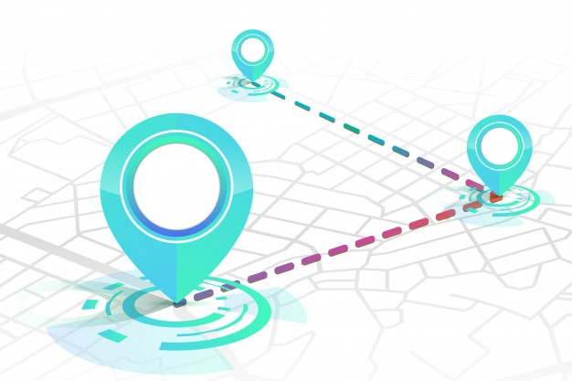

NHỮNG ỨNG DỤNG QUAN TRỌNG CỦA HTML5
MỤC LỤC
Đơn giản hóa việc phát triển web
GAME
Hỗ trợ đồ họa tương tác
STORAGE
Giúp hợp nhất các địa chỉ
Tăng khả năng bảo mật
Công nghệ 3D
Làm video của Web đẹp hơn

1.Đơn giản hóa việc phát triển web
Bill Mill – chuyên viên thiết kế cho Lookingglass Cyber Solutions giải thích ngắn gọn về sự thay đổi này: “Tôi thực sự thích HTML5 vì nó cho phép tôi làm việc trong một môi trường thích hợp, trình duyệt kết hợp với Javascript, DOM mà không phải bật đi bật lại Flash và HTML5. Nó vừa là 1 ngôn ngữ lại vừa là 1 công cụ , không khác biệt lắm so với các plug-in khác”.
HTML 5 cung cấp 1 ngôn ngữ lập trình JavaScript, 1 kiểu dữ liêu (XML hoặc DOM) và 1 phần nguyên tắc thiết lập (CSS) để kết nối văn bản, audio, video và Đồ họa. Thách thức trong việc tạo ra cái gì đó tốt đẹp vẫn là mênh mông nhưng điều đó sẽ đơn giản hơn khi làm việc trong 1 tiêu chuẩn thống nhất.

2. GAME
Các trò chơi tương tác có thể chạy chỉ với một trình duyệt Web mà không cần cài đặt phần mềm hoặc plugin khác
3. Hỗ trợ đồ họa tương tác
Web cũ tải hình ảnh bằng cách tải file GIF hay JPG. Web mới có thể xây dựng hình ảnh trên Canvas. Một loạt thư viện đồ họa đẹp được đưa ra, giúp cho đồ họa của Website trở nên tương tác hơn. Hiện nay, JavaScript có thể tính toán cũng như vẽ hình ảnh bằng dữ liệu. Mọi thứ trở nên sống động khi những lập trình viên có thời gian để đưa ra giải pháp. Adobe mới đây đã bắt đầu phát triển đồ họa tinh xảo cho HTML5. Sự xuất hiện của những công cụ này sẽ mở đầu cho những khả năng mới cũng như đồ họa sẽ được tinh xảo hơn hiện nay. Về đầu trang
4. STORAGE

Dữ liệu có thể được lưu trữ trên máy tính hoặc thiết bị di động của người dùng, vì vậy các ứng dụng Web hoạt động mà không cần kết nối Internet
5. Giúp hợp nhất các địa chỉ
Đối với máy chủ Web, địa chỉ máy tính của chúng ta đơn thuần chỉ là những con số ẩn danh. Chuẩn HTML5 cho phép các trình duyệt định vị vị trí của người dùng. Tuy nhiên, nó sẽ không hoạt động với các máy bàn (hoạt động với GPS hoặc Wifi), nhưng nó lại hoạt động tốt với smartphone cầm tay. Về đầu trang
6.Tăng khả năng bảo mật
Mỗi trình duyệt có 1 plug-in riêng do các nhóm lập trình khác nhau lập ra với những tiêu chuẩn khác nhau, được đưa ra vào thời điểm khác nhau và kiểu mẫu bảo mật cung khác nhau. Thông thường, một số phiên bản plug-in có tính bảo mật hơn so với loại khác. Và khi số lượng plug-in gia tăng,chúng làm tăng độ phức tạp trong kiểm tra các lỗi an ninh. Liệu plug-in hay trình duyệt đã có lỗ hổng lớn vào năm ngoái? Liệu có phức tạp không khi chỉ cập nhât trình duyệt mà không nâng cấp plug-in hoặc ngược lại? Ai có thể nhớ được?
Thay thế nhiều loại plug-in với các đặc điểm được tích hợp với HTML 5 sẽ bỏ đi được những khuyết điểm có trong các plug-in trước đó. Những khuyết điểm có thể bị lợi dụng để thiết lập mã độc. Nếu như nhóm an ninh kiểm tra Firefox, Chorme hoặc IE cho phép cài đặt các plug-in này, sự nguy hiểm sẽ giảm bớt đi.
Về
đầu
trang
7. Công nghệ 3D
Một công nghệ được gọi là WebGL có thể tạo hiệu ứng 3-D tương tác bằng cách sử dụng bộ xử lý đồ họa của máy tính
8. Làm video của Web đẹp hơn

Chuẩn HTML5 giúp các nhà lập trình tiếp hợp videp dễ dàng hơn với thông tin trên trang, cung cấp các ứng dụng tới lập trình viên jQuery và PHP ngoài Flash, Silverlight hay JavaFX..
Mọi người đều muốn cung cấp mã nguồn mở để mở những hình ảnh động và âm thanh tương ứng dẫn đến việc không thống nhất. Chuẩn HTML5 sẽ là mã nguồn mở trung gian, có nghĩa là chúng ta thay đổi cách gọi từ plug-in thành codec. Tuy nhiên, dù ta có chuẩn video nhưng trình duyệt lại rất khó để dịch dữ liệu.
Mặc dù vẫn còn sự cân nhắc cũng như thiếu sự nhất trí hoàn toàn, thẻ video mới này sẽ cho thấy sức mạnh của video, giúp cho HTML bớt đi kí tự văn bản và video sẽ được dùng nhiều hơn. Về đầu trang